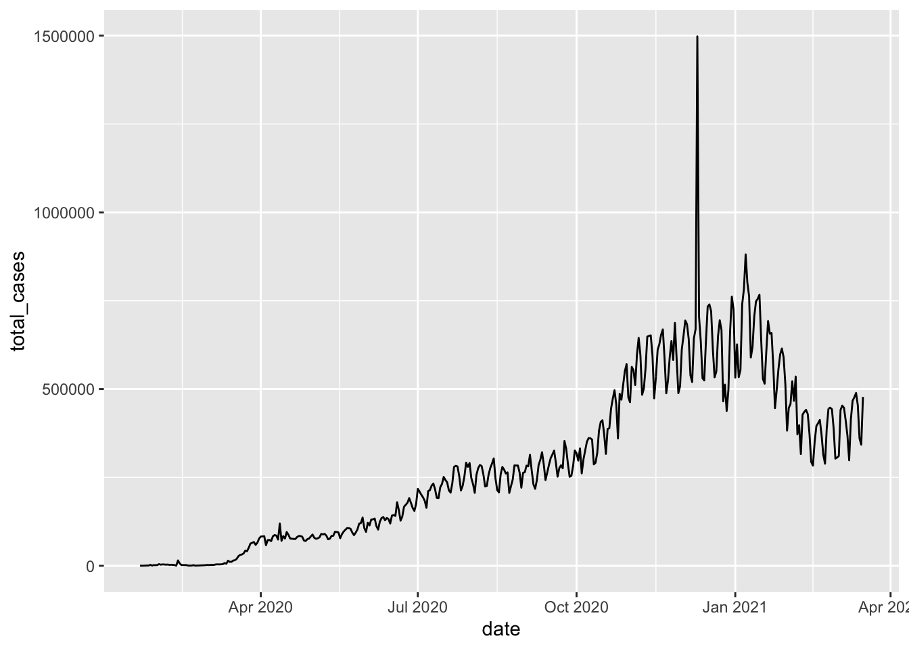

Lesson 11: Data import, export, and conversion between data types
Readings
Required:
- Chapter 3: Data types and objects in Modern R with the tidyverse by Bruno Rodrigues
- Chapters 10, 11, 14.1 + 14.2, 15.1 + 15.2 and 16 in R for Data Science by Hadley Wickham & Garrett Grolemund [That sounds like a lot, but all the sections are pretty short and contain important information. Chapters 10 and 11 are the most essential if you don’t have time to read them all]
Other resources:
- The rest of Chapters 14-16 in R for Data Science by Hadley Wickham & Garrett Grolemund
Plan for today and learning objectives
So far, we’ve mostly worked with datasets provided in R packages. Today we’ll look at how we get our own data imported and how we export processed data files, summary tables, and plots.
By the end of today’s class, you should be able to:
- Read data files into R with a variety of
readrfunctions - Parse different types of data and make sure R is interpreting your variable types correctly
- Use
janitor::clean_names()to make column headers more manageable - Write text output to your disk
- Save plots
Loading packages
library(tidyverse)
Data import
Reading data into RStudio
So far, we’ve been working with datasets that are built into R or we have just provided code to run to import data into R.
When working in the tidyverse, the most common import function we
will use are the read_xx() functions from the tidyverse
package readr.
read_csv()reads comma delimited files,read_csv2()reads semicolon separated files (common in countries where,is used as the decimal place),read_tsv()reads tab delimited files, andread_delim()reads in files with any delimiter.read_fwf()reads fixed width files. You can specify fields either by their widths withfwf_widths()or their position withfwf_positions().read_table()reads a common variation of fixed width files where columns are separated by white space.
All the readr::read_xx() functions have many additional
options including the ability to skip columns, skip rows, rename columns
on import, trim whitespace, and much more. They all use the same syntax,
so once you get familiar with one, you can easily apply your knowledge
to all the other functions in readr.
You can examine the options by looking at the documentation, e.g
?read_csv(). There is also a very useful overview in Chapter 11 of Grolemund
and Wickham’s R for Data Science
We can also read directly from spreadsheet formats:
readxl::read_excel()reads directly from Excel spreadsheetsgooglesheets4::read_sheet()from the package googlesheets4 reads in data directly from Google Sheets
For all of these, we can either read in data from a file path or directly from a URL.
To illustrate, let’s revisit Jenny Bryan’s Lord of the Rings Data that we worked with last class.
We can import directly from Jenny’s GitHub page:
lotr <- read_csv("https://raw.githubusercontent.com/jennybc/lotr-tidy/master/data/lotr_tidy.csv")## Rows: 18 Columns: 4
## ── Column specification ────────────────────────────────────────────────────────
## Delimiter: ","
## chr (3): Film, Race, Gender
## dbl (1): Words
##
## ℹ Use `spec()` to retrieve the full column specification for this data.
## ℹ Specify the column types or set `show_col_types = FALSE` to quiet this message.We can also use the same function to read directly from my disk. To
get a local copy, let me first save it with readr’s
write_csv() function (we’ll get back to how that function
works a little later). I’ll first make sure I have a good place to save
it. If you don’t already have a subdirectory named datasets
or similar, create one within your home directory by clicking “New
Folder” in your file pane.
write_csv(lotr, file = "../datasets/lotr_tidy.csv")Inspect the file to make sure it got created, then load it into R
with the read_csv() function (make sure you specify the
path to where you actually saved it).
lotr_tidy <- read_csv("../datasets/lotr_tidy.csv")## Rows: 18 Columns: 4
## ── Column specification ────────────────────────────────────────────────────────
## Delimiter: ","
## chr (3): Film, Race, Gender
## dbl (1): Words
##
## ℹ Use `spec()` to retrieve the full column specification for this data.
## ℹ Specify the column types or set `show_col_types = FALSE` to quiet this message.read_csv() uses the first line of the data for the
column names, which is a very common convention. We can play around with
tweaking our local copy of the data file to make use of the options for
tweaking this behavior. For example, if there are a few lines of
metadata at the top of the file, we can use skip = n to
skip the first n lines; or use comment = "#" to drop all
lines that start with (e.g.) #. When the data do not have column names,
we can use col_names = FALSE to tell
read_csv() not to treat the first row as headings, and
instead label them sequentially from X1 to
Xn.
We can also make an Excel file with the same data and try reading in
from that (note that you need to first install the readxl
package, if you don’t already have it)
library(readxl) ## install.packages("readxl")
lotr_xlsx <- read_xlsx("datasets/LOTR.xlsx")
# you can specify which sheet to read the data from with the "sheet = " argumentOr we can read from a google sheet! If you want to just read from
public sheets (set to “Anyone on the internet with this link can
view/edit”), you want to first run gs4_deauth() to indicate
there is no need for a token. If you want to access private sheets,
check the instructions for configuring an authenticated user here.
library(googlesheets4) ## install.packages("googlesheets4")
gs4_deauth()
lotr_gs <- read_sheet("https://docs.google.com/spreadsheets/d/1X98JobRtA3JGBFacs_JSjiX-4DPQ0vZYtNl_ozqF6IE/edit#gid=754443596")
Why use the tidyverse/readr import functions instead of base-R?
From R4DS
If you’ve used R before, you might wonder why we’re not using read.csv(). There are a few good reasons to favor readr functions over the base equivalents:
They are typically much faster (~10x) than their base-R equivalents (e.g.
read.cvs()). Long running jobs have a progress bar, so you can see what’s happening. If you’re looking for raw speed, try data.table::fread(). It doesn’t fit quite so well into the tidyverse, but it can be quite a bit faster.They produce tibbles, they don’t convert character vectors to factors, use row names, or munge the column names. These are common sources of frustration with the base R functions.
They are more reproducible. Base R functions inherit some behaviour from your operating system and environment variables, so import code that works on your computer might not work on someone else’s.
Cleaning up variables
Once we have the data read in, we may need to clean up several of our variables. Parsing functions are really useful for that.
Parsing numbers
It seems like it should be straightforward to parse a number, but three problems make it tricky:
People write numbers differently in different parts of the world. For example, some countries use . in between the integer and fractional parts of a real number, while others use ,.
Numbers are often surrounded by other characters that provide some context, like “$1000” or “10%”.
Numbers often contain “grouping” characters to make them easier to read, like “1,000,000”, and these grouping characters vary around the world.
To address the first problem, readr has the notion of a
“locale”, an object that specifies parsing options that differ from
place to place. When parsing numbers, the most important option is the
character you use for the decimal mark. You can override the default
value of . by creating a new locale and setting the decimal_mark
argument. We’ll illustrate this with parse_xx() functions.
Basically, every col_xx() function has a corresponding
parse_xx() function. You use parse_xx() when
the data is in a character vector in R already; you use
col_xx() when you want to tell readr how to load the
data.
parse_double("1.23")## [1] 1.23parse_double("1,23", locale = locale(decimal_mark = ","))## [1] 1.23readr’s default locale is US-centric, because generally
R is US-centric (e.g. the documentation of base R is written in American
English). An alternative approach would be to try and guess the defaults
from your operating system. This is hard to do well, and, more
importantly, makes your code fragile: even if it works on your computer,
it might fail when you email it to a colleague in another country.
parse_number() addresses the second problem: it ignores
non-numeric characters before and after the number. This is particularly
useful for currencies and percentages, but also works to extract numbers
embedded in text.
parse_number("$100")## [1] 100parse_number("20%")## [1] 20parse_number("It cost $123.45")## [1] 123.45The final problem is addressed by the combination of
parse_number() and the locale as
parse_number() will ignore the “grouping mark”:
# Used in America
parse_number("$123,456,789")## [1] 123456789# Used in many parts of Europe
parse_number("123.456.789", locale = locale(grouping_mark = "."))## [1] 123456789# Used in Switzerland
parse_number("123'456'789", locale = locale(grouping_mark = "'"))## [1] 123456789
Dates
Dates can be tricky! If you work with date data, I suggest you review chapters 11.3.4 and 16 in R4DS.
Converting between data types with parse_x()
functions
We can use the parse_xx() functions in combination with
mutate() to clean up values in a variable.
Let’s have a look at how to clean up this dataset:
mess = read_tsv("https://raw.githubusercontent.com/nt246/NTRES6940-data-science/master/datasets/messy_data.tsv", locale = locale(decimal_mark = ","))## Rows: 3 Columns: 3
## ── Column specification ────────────────────────────────────────────────────────
## Delimiter: "\t"
## chr (2): item, price
## dbl (1): size
##
## ℹ Use `spec()` to retrieve the full column specification for this data.
## ℹ Specify the column types or set `show_col_types = FALSE` to quiet this message.# What happens if we run this without the locale argument?Let’s clean up the price column
mess |>
mutate(price = parse_number(price))## # A tibble: 3 × 3
## item price size
## <chr> <dbl> <dbl>
## 1 a 45 3.5
## 2 b 5 2.7
## 3 c 3 2.9
Cleaning up column names
Sometimes you’ll encounter datasets with really inconsistent column names. Inconsistent naming is not a problem per se for our ability to work with a dataset, but it’s a bit annoying to look at and to have to remember when calling variable names. In other cases, spaces and special characters in column names of data you import can actually cause problems downstream, so we often may want to clean them up.
The janitor package by Sam Firke is a great collection
of functions for some quick data cleaning, like:
janitor::clean_names(): update column headers to a case of your choosingjanitor::get_dupes(): see all rows that are duplicates within variables you choosejanitor::remove_empty(): remove empty rows and/or columnsjanitor::adorn_*(): jazz up tables
Here, we’ll use janitor::clean_names() to convert all
column headers in a messy dataset to a more convenient case - the
default is lower_snake_case, which means all spaces and
symbols are replaced with an underscore (or a word describing the
symbol), all characters are lowercase, and a few other nice
adjustments.
For example, janitor::clean_names() would update these
nightmare column names into much nicer forms:
My...RECENT-income!becomesmy_recent_incomeSAMPLE2.!test1becomessample2_test1ThisIsTheNamebecomesthis_is_the_name2015becomesx2015
If we wanted to then use these columns (which we probably would,
since we created them), we could clean the names to get them into more
coder-friendly lower_snake_case with
janitor::clean_names().
Let’s first install and load the janitor package:
library(janitor) #install.packages("janitor")Then let’s load the data and clean the column names:
msa <- read_tsv("https://raw.githubusercontent.com/nt246/NTRES-6100-data-science/main/datasets/janitor_mymsa_subset.txt")## Rows: 19 Columns: 13
## ── Column specification ────────────────────────────────────────────────────────
## Delimiter: "\t"
## chr (5): Hang-Method, HGP, Sex F/M, Est % BI, FeedType
## dbl (8): Plant ID, Body#, LeftSideScanTime, RightSideScanTime, LeftHscw, P8F...
##
## ℹ Use `spec()` to retrieve the full column specification for this data.
## ℹ Specify the column types or set `show_col_types = FALSE` to quiet this message.colnames(msa)## [1] "Plant ID" "Body#" "LeftSideScanTime"
## [4] "RightSideScanTime" "Hang-Method" "HGP"
## [7] "Sex F/M" "LeftHscw" "P8Fat"
## [10] "Est % BI" "FeedType" "NoDaysOnFeed"
## [13] "MSA/Index"Let’s compare the column names before and after cleaning
msa_clean <- clean_names(msa)
cbind(colnames(msa), colnames(msa_clean))## [,1] [,2]
## [1,] "Plant ID" "plant_id"
## [2,] "Body#" "body_number"
## [3,] "LeftSideScanTime" "left_side_scan_time"
## [4,] "RightSideScanTime" "right_side_scan_time"
## [5,] "Hang-Method" "hang_method"
## [6,] "HGP" "hgp"
## [7,] "Sex F/M" "sex_f_m"
## [8,] "LeftHscw" "left_hscw"
## [9,] "P8Fat" "p8fat"
## [10,] "Est % BI" "est_percent_bi"
## [11,] "FeedType" "feed_type"
## [12,] "NoDaysOnFeed" "no_days_on_feed"
## [13,] "MSA/Index" "msa_index"
There are many other case options in clean_names(),
like:
- “snake” produces snake_case (the default)
- “lower_camel” or “small_camel” produces lowerCamel
- “upper_camel” or “big_camel” produces UpperCamel
- “screaming_snake” or “all_caps” produces ALL_CAPS
- “lower_upper” produces lowerUPPER
- “upper_lower” produces UPPERlower

Art by Allison Horst. Check out more here
Parsing different data types
As we saw above, when we run read_csv(), it prints out a
column specification that gives the name and type of each column.
The following section is borrowed from R4DS Chapter 11.4
readr uses a heuristic to figure out the column types.
For each column, it pulls the values of 1000^2 rows spaced evenly from
the first row to the last, ignoring missing values and uses some
(moderately conservative) heuristics to figure out the type of each
column.
The heuristic tries each of the following types, stopping when it finds a match:
- logical: contains only “F”, “T”, “FALSE”, or “TRUE”.
- integer: contains only numeric characters (and -).
- double: contains only valid doubles (including numbers like 4.5e-5).
- number: contains valid doubles with the grouping mark inside.
- time: matches the default time_format.
- date: matches the default date_format.
- date-time: any ISO8601 date.
If none of these rules apply, then the column will stay as a vector of strings.
We’ll work through some examples on this, using the
students.csv examples from r4ds (2e) here
Data export
readr also comes with two useful functions for writing
data back to disk: write_csv() and
write_tsv(). Both functions increase the chances of the
output file being read back in correctly and also let’s you save
dataframes with less typing than you often would need to e.g. avoid
rownames or quotes with the base-R function
write.table()
Let’s look at an example. Say we wanted to save a summary we had generated a few week ago of the coronavirus data:
coronavirus <- read_csv('https://raw.githubusercontent.com/RamiKrispin/coronavirus/master/csv/coronavirus.csv')## Rows: 919308 Columns: 15
## ── Column specification ────────────────────────────────────────────────────────
## Delimiter: ","
## chr (8): province, country, type, iso2, iso3, combined_key, continent_name,...
## dbl (6): lat, long, cases, uid, code3, population
## date (1): date
##
## ℹ Use `spec()` to retrieve the full column specification for this data.
## ℹ Specify the column types or set `show_col_types = FALSE` to quiet this message.coronavirus |>
filter(type == "confirmed") |>
group_by(date) |>
summarize(total_cases = sum(cases)) |>
write_csv(file = "../datasets/daily_casecount.csv")We also briefly talked about how to save plots a few classes ago. To recap here:

Use ggsave()
coronavirus |>
filter(type == "confirmed") |>
group_by(date) |>
summarize(total_cases = sum(cases)) |>
ggplot(mapping = aes(x = date, y = total_cases)) +
geom_line()
ggsave(filename = "assets/daily_casecounts_plot.png")ggsave() has really nice defaults, so you don’t
have to specify lots of different parameters. But you can! See
common examples here
{kind=link}
Creating small tibbles on the fly
Sometimes it can be useful to create small toy tibbles or tables for displaying in an RMarkdown without having to read in a file.
To see how to do this, we’ll review R4DS Chapter 10.2 and 11.2
Exercise:
Reproduce the two tibbles below, first with the tibble()
and then with the tribble() functions.
| fruit | weight | price |
|---|---|---|
| apple | 4.3 | 5 |
| pear | 3.4 | 4 |
| orange | 5.2 | 6 |
| Types | A | B | C |
|---|---|---|---|
| x | 3 | 1 | 4 |
| y | 5 | 1 | 6 |
| z | 6 | 1 | 7 |